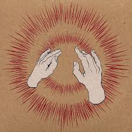

Post-Rock: Defining a lost era of music
Music videos to get lost in
Home Page
Video Tribute
Post-Rock Rankings
Godspeed You! Black Emperor
Merch
History of band
Yndi Halda
Godspeed You! Black Emperor-Rockets Fall on Rocket Falls